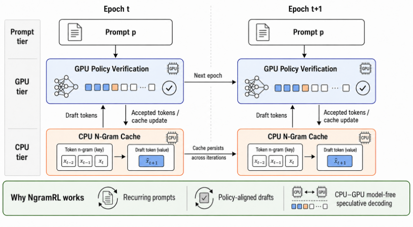
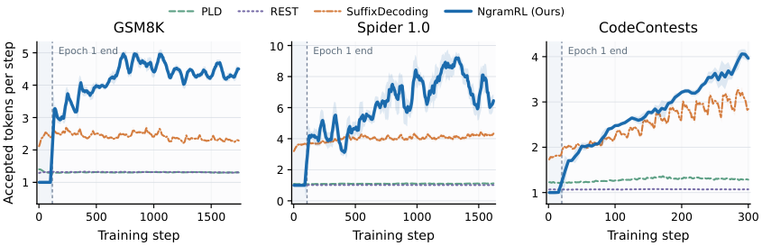

目录 · 9 节
1它到底在解决什么问题？2整体结构：CPU 上的 n-gram 表 + GPU 上的验证3每道题一张 n-gram 表：怎么建、怎么查？4验证：为什么不会改变训练结果？5预取器：为什么 CPU 查表会拖慢 GPU？6实验结果：快了多少？7我认为它的局限8一个强化学习训练团队可以怎么试9结论与评价在做大模型强化学习后训练、尤其是 text-to-SQL 或代码这类结构化输出任务的团队值得读。它抓住了一个很便宜的加速来源：同一道题在训练里会被反复采样，模型上一轮写过的答案，就是这一轮最好的草稿。核心一句话：为每道题建一张小的 n-gram 表，用它最近几轮的生成结果当投机解码的草稿，再由当前模型逐 token 验证，不改变采样分布。在 Qwen3-8B 的 Spider（text-to-SQL）训练后期，每次前向平均产出 7.77 个 token，而目前较强的无模型基线 SuffixDecoding 是 4.15 个；配套的预取器又把实测生成吞吐提高了 1.38 倍。
它到底在解决什么问题？
先说背景。GRPO（Group Relative Policy Optimization，一种常用的大模型强化学习算法）每一步先让模型为每道题采样一组答案，再打分、更新参数。采样这一步叫 rollout，要一个 token 一个 token 地生成，论文引用的数据是它能占到每步训练时间的 70% 以上。
加速逐 token 生成的标准办法是投机解码：先用一个便宜的“草稿来源”猜出后面几个 token，再让大模型一次前向把它们全部验证掉，猜对几个就省几次前向。问题是常见的草稿来源放到强化学习里都不合适：
| 草稿来源 | 在强化学习里的问题 |
|---|---|
| 小草稿模型或训练出来的草稿头 | 占显存，而训练时显存已经被模型、优化器状态和 KV 缓存占满；模型每步都在变，草稿模型越用越不准 |
| 从当前输入里找重复片段（PLD） | 推理过程和题目本身重合很少，猜中率低 |
| 从固定语料库检索（REST） | 语料不跟着模型变 |
| 全局后缀树，存最近 1 万条回答（SuffixDecoding） | 不区分题目，别的题的答案会干扰 |
作者的观察是：GRPO 会在多个 epoch 里反复采样同一批题，而模型每步只变一点点，所以同一道题的新答案和它之前的答案高度重复。论文测了 Spider 上相邻两个 epoch 的同题答案：只用前一轮的一条答案，就能覆盖后一轮答案的 48% 到 96%，重复片段长 7 到 23 个 token。
一个直观例子（论文图 2）：同一道 SQL 题，训练早期两轮答案只共享开头的 select count(*) 计数语句和表名列名，重合 50%；中期只差一个别名，重合 81%；后期一字不差，重合 100%。
整体结构：CPU 上的 n-gram 表 + GPU 上的验证

整个方法分三块：每道题一张 n-gram 表负责出草稿；GPU 上的策略模型用标准的投机采样规则验证；一个预取器把 CPU 查表的时间藏到 GPU 计算后面。表放在主机内存里，不占显存，也不需要训练任何额外模型。
每道题一张 n-gram 表：怎么建、怎么查？
n-gram 表记录的是“前面几个 token 之后，接着出现过什么 token、出现过几次”。每一步训练结束后，把这道题本步的所有答案切成长度 2 到 6 的片段写进表。查的时候，用当前已生成内容去匹配表里最长的前文，把它记录的后续当草稿；匹配不上就退回普通解码。
手算例子（示意）：某道题前几轮的答案里，“group by billing_country”（按国家分组）后面接 “order”（排序）出现了 3 次，接 “having”（分组筛选）出现 1 次。这一轮模型刚写到 “group by billing_country”，表就建议下一个是 “order”，再顺着往下查 “by billing_country order” 之后是什么，连续拼出最多 16 个草稿 token。论文的写法是把表里记录的后续当草稿，并把表给出这个草稿的概率记为 q；最简单的实现是按出现次数选最高的那个，这时 q 可以看成 1，也可以按次数占比抽样，这时 “order” 的 q 是 3÷4=0.75。下一节的验证规则对两种实现都成立。
为什么要每道题单独一张表？消融实验直接回答了这个问题：把所有题合进一张全局表，训练后期每步平均接受 2.41 个 token，和 SuffixDecoding 的 2.43 差不多；按题分表则是 3.05。把 SuffixDecoding 的缓存扩大 4 倍到 4 万条回答，也只升到 2.65。这说明 收益来自“按题查找”这个结构，而不是缓存更大。
表也不能无限长。作者只保留每道题最近 w 次出现时的答案，旧的淘汰。在 Qwen3-8B 的 GSM8K（小学数学题）上，w=4 时每步接受 2.81 个，占用 1878 MB；w=16 时 3.38 个、3181 MB；保留全部历史反而略降到 3.34 个、3634 MB，因为太旧的答案已经不像当前模型会写的了。所以只留最近几次，既省内存，又让草稿跟得上模型的变化。
验证：为什么不会改变训练结果？
草稿只是建议，最终每个 token 是否采用由当前模型决定。设表给出草稿 x 的概率是 q，当前模型给 x 的概率是 π，就以 min(1, π÷q) 的概率接受它；拒绝时，从模型比草稿“多出来”的那部分概率里重新采样一个 token。
手算例子（示意）：按次数抽样时 “order” 的 q=0.75，模型给 0.9，0.9÷0.75 大于 1，必定接受；如果模型只给 0.3，接受概率就是 0.3÷0.75=0.4。如果表总是给最高频的那个，q=1，接受概率就等于模型给这个 token 的概率本身，模型给 0.3 就有 30% 的机会接受。这是投机采样的标准规则，可以证明最终采到每个 token 的概率和直接用模型采样完全一样。所以 rollout、奖励、梯度的分布都不变，加速不会影响模型训练效果，比较各种草稿方法时只需要比速度。
预取器：为什么 CPU 查表会拖慢 GPU？
表放在 CPU 上，代价是两边要排队。每一轮解码，GPU 验证完草稿，要把结果同步回 CPU，CPU 才能查下一轮的草稿、调度、启动计算。论文测得这段往返让 GPU 每轮空闲约 29%，其中查表本身耗时很少，主要是同步和调度。
解决办法是在 GPU 验证当前这轮的同时，提前把下一轮可能需要的草稿都准备好。下一轮的查询内容取决于本轮验证的结果，可以写成一对 (j, b)：j 是接受了几个草稿 token，b 是模型在第 j+1 个位置自己采出的那个 token。草稿长 16 时 j 有 17 种可能，b 则要从整个词表里采，事先不知道。
预取器的做法是猜 b：对每个可能的 j，从表里取出最常见的几个后续 token 作为 b 的候选，每个候选各查一份草稿，组成一张以 (j, b) 为键的小表，在 GPU 算完之前送过去。GPU 拿到真实的 (j, b) 后直接按键取草稿，猜中了就没有 CPU 等待，没猜中就只让这一条请求按老办法查表，不会拖住整批。候选总数 N 怎么分给各个 j，按最近一段时间的统计来定：常见的接受长度多分；全部接受时下一个 token 约 90% 就是表里排第一的那个，只需 1 个候选。
加速多少取决于猜中率 c。设每轮 GPU 计算时间是 Tg，需要隐藏的 CPU 串行时间是 Tc，加速比是 (Tg+Tc)÷(Tg+(1−c)×Tc)。用论文图 3 的数字手算（示意）：同步版每轮 26.1 毫秒，预取后 19.2 毫秒，即 Tg≈19.2、Tc≈6.9；c=0.966 时加速比 26.1÷(19.2+0.034×6.9)≈1.34。论文实测 Qwen3-8B 在 Spider 上达到 1.38 倍，上限是 1.40 倍。
实验结果：快了多少？
实验用 verl 框架跑 GRPO，2 张 A100，每步 64 道题、每题采样 5 个答案、共 15 个 epoch，模型是 Qwen3-8B 和 DeepSeek-LLM-7B，任务是 GSM8K、Spider 和 CodeContests（编程竞赛题）。指标是每次前向平均产出的 token 数，等于 1 加上平均接受的草稿长度。
| 方法（Qwen3-8B，训练后 30%） | GSM8K | Spider | CodeContests |
|---|---|---|---|
| PLD | 1.31 | 1.11 | 1.30 |
| REST | 1.31 | 1.02 | 1.07 |
| SuffixDecoding | 2.32 | 4.15 | 2.96 |
| NgramRL | 4.36 | 7.77 | 3.60 |

从曲线能看出三点。第一个 epoch 里每道题都是第一次出现，表是空的，NgramRL 只有 1 个 token，比基线还差。Spider 上中期达到峰值后回落，因为模型写的 SQL 变得多样，老答案开始过时。CodeContests 上前期全局缓存领先，因为不同题之间有大量通用模板代码，按题分表要等历史积累够了才反超。这说明 输出越规整、越依赖具体题目，这个方法的优势越大。
接受长度的分布是长尾的。Spider 上有 14.1% 的解码步接受了 12 个以上的草稿 token，最多 10.1% 的步 16 个全部接受，相当于把上一轮的答案原样复用、一次前向验证完。这也是作者把草稿长度设到 16 的原因，设短了就吃不到这条长尾。
我认为它的局限
第一，论文里实测的墙钟加速，是预取器相对同步版 NgramRL 的 1.38 倍，而且只在 Spider 上达到；GSM8K 和 CodeContests 上只有 1.05 到 1.06 倍。7.77 这类数字是每次前向的 token 数，验证 16 个草稿 token 的前向本身比普通解码贵，相对不用投机解码时整步训练快多少，要在自己的环境里测。
第二，第一个 epoch 没有收益。只训一两个 epoch，或者每道题只出现一次的数据，用不上这个方法。论文的实验是 15 个 epoch，Spider 的曲线在第一个 epoch 结束前一直是 1。
第三，主机内存开销不小。Qwen3-8B 的 GSM8K 上 w=16 时表要 3181 MB，而实验只有 64 道题一步；题库更大、答案更长时，内存会随之增长，需要按题库规模估算。
一个强化学习训练团队可以怎么试
- 先拆分时间：在现有 GRPO 训练里测 rollout 占每步时间的比例，以及同一道题在整个训练中被采样的次数，复用次数少的任务收益有限。
- 选一个结构化输出任务，如 text-to-SQL 或函数调用，按论文配置（n-gram 最长 6、草稿长度 16、窗口 w=4 到 16）接进 rollout 引擎，先只记录每次前向的 token 数，不改变训练。
- 再测墙钟时间，对比不用投机解码的版本，确认验证长草稿的额外开销没有吃掉收益。
- 最后加上预取器，用 N=8 到 32 个候选，观察猜中率和每轮 GPU 空闲时间的变化。
结论与评价
最值得记住的是 强化学习训练里的重复采样本身就是免费的草稿来源，不需要额外模型、不占显存、自动跟着模型更新。
| 维度 | 评价 |
|---|---|
| 问题重要性 | 高。rollout 是强化学习后训练的主要开销 |
| 方法创新性 | 中高。按题建表的思路简单，但把它和 (j, b) 预取结合起来解决 CPU 往返，系统设计完整 |
| 实验证据 | 中。两个模型、三个任务、消融充分，但只在 2 张 A100 和 64 道题一步的规模上，墙钟加速只报告了预取器的部分 |
| 工程成本 | 低到中。接在 verl 的 vLLM rollout 上，不改模型和奖励，预取器需要改调度逻辑 |
| 是否值得尝试 | 值得。多 epoch、结构化输出的强化学习训练可以优先试 |
讨论
欢迎补充实验细节、复现经验或不同看法。需 GitHub 登录。
正在加载讨论…